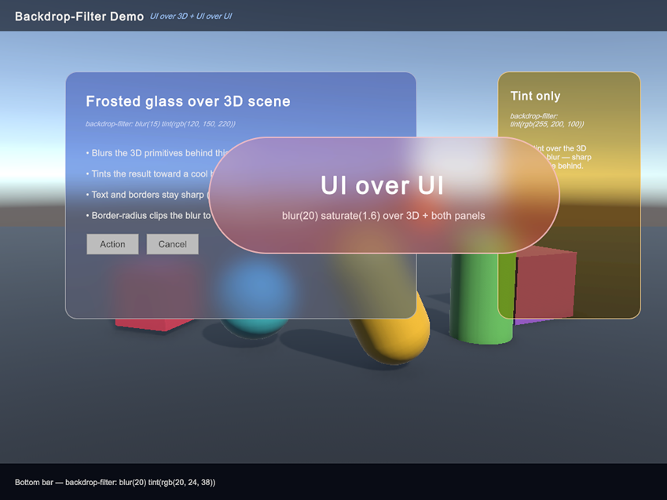
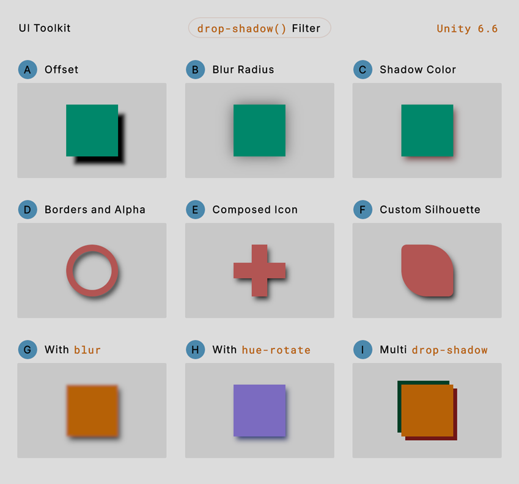
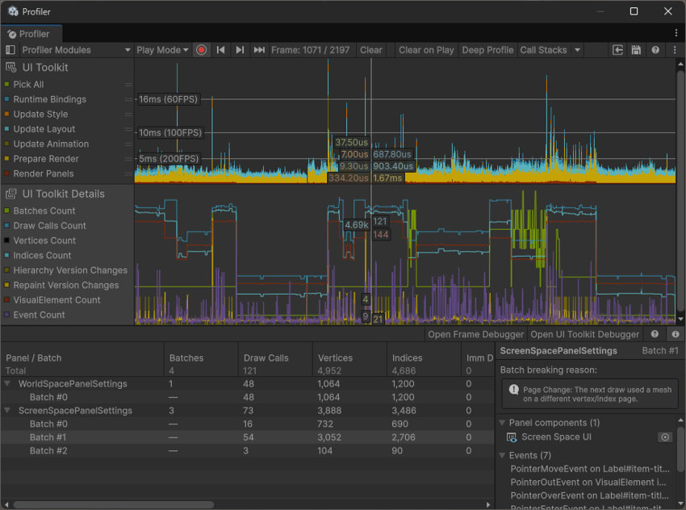

Unity 6.6 (6000.6) introduces several new features and improvements.
To read about all of the changes and known issues in this version of Unity, refer to the Unity 6.6 Release Notes.
To find the release notes for other releases, refer to the Unity download archive.
To watch a video summary of the new features and improvements in this release, refer to the official What’s New in Unity 6.6 video.
To read about changes made to packages that were updated as part of this release, refer to the documentation of those packages.
If you’re upgrading existing projects from Unity 6.5 (6000.5), refer to Upgrade to Unity 6.6 for information about how your project might be affected.
Review the new features and improvements for Unity 6.6 in these areas:
This section outlines recent updates to Unity’s 2D system.
The Sprite Editor window now has the following features:
You can also now edit the colors of bones in an overlay in the Scene view.
The Tile Palette window now has the following features:
The Grid Brush tab of the Preferences window has the following features:
The Editor Diagnostics Preferences window now lets you enable a debug display to visualize tilemap chunks in the Scene view when running diagnostics as part of a report to the Unity Support team.
2D lights in the Universal Render Pipeline now support the following:
Sprites in projects that use GPU skinning can now cast 2D shadows.
The Unity Profiler now includes the following modules for 2D projects:
For more information, refer to Profiler modules introduction.
Added the Delaunay subdivision method as a way to generate the mesh for a sprite. It creates a tighter fit to the sprite’s outline. For more information, refer to Sprite (2D and UI) texture Import Settings window reference.
This section outlines recent updates to Unity’s animation system.
You can now use the search bar to filter properties in the Animation window.
The Animation Rigging package is now a core package.
The Timeline package is now a core package.
This section outlines recent updates to Unity’s asset and media handling.
The content directory build system is designed as a replacement for the AssetBundle content build system. It supports local content distribution and has benefits such as automatic de-duplication of assets, reduced load times, and a lower memory overhead. To define assets to include in a content build, use root assets, and then use the Loadable API to load and unload individual assets. You can then use BuildPipeline.BuildContentDirectory to create a content build.
Content directories are supported in the Addressables package. While the workflow of adding assets to groups, and building from the Addressables Groups window remains the same, there is now a new Content Directory schema which you can use to control content directory builds. Additionally, the Default Build Script now acts as a build script for both AssetBundles and content directory builds.
For more information, refer to Introduction to content directories. For information about using content directories in the Addressables package, refer to Convert Addressables projects to content directories and Choose a content build system.
Whenever you create a Player or content directory build, Unity now creates report files related to the build history in the Library/BuildHistory folder of your project. These files contain information about the build and the files it produced, including a build report, which you can analyze through the new Build Analysis window in the Editor. You can also use the BuildHistory API to access the build history through scripts.
For more information, refer to Build history.
If a Particle System Shape module, Terrain Detail Mesh setting, or Mesh Collider component requires a mesh to be readable by the CPU, you must enable the Read/Write property of the mesh. Previously, Unity enabled this setting at build time, which contributed to long build times. If you don’t enable the Read/Write property of the mesh, a warning is displayed in the Inspector window, and if you attempt to build, the build process fails.
Added support to import and use up to third order ambisonic audio files, which helps you achieve more spatial definition and precise localization of sound.
While first order files contain 4 channels for basic 360-degree audio, second and third order files contain 9 and 16 channels respectively. This allows you to play more immersive audio clips within your application. For more information, refer to Ambisonic Audio.
Note: Unity doesn’t decode these files by default. To decode them, you need to use a third-party ambisonic decoder plug-in or create your own Ambisonic decoder plug-in.
New projects now contain a DataStore subfolder in the Library folder of your project. This replaces the Artifacts subfolder, and still contains data related to asset processing.
This section outlines recent updates to Unity’s camera tools.
The Cinemachine package is now a core package.
This section outlines recent updates to the Unity Editor’s general workflows and user interface.
You can now navigate backward and forward through your recent selections in the Editor. The Editor records up to 50 selections as you work, including objects selected in the Inspector window and folders navigated in the Project window.
You can navigate the selection history in the following ways:
For more information, refer to Navigate through your Editor selection history.
You can now add Vivox to your Unity project through the Services dropdown menu by selecting Services > Vivox > Install.
You can now use Editor Tool APIs in any custom Editor window, not just in the Scene view.
You can use these APIs to do the following:
ISupportsEditorTools on any EditorWindow subclass.EditorToolContext that targets a specific custom tooling window.EditorTool that targets contexts belonging to custom tool-owning windows.For more information about hosting Editor tools in custom windows, refer to the Unity Discussions post Building custom tools for the Unity Editor.
You can now use Define Constraints with native plug-ins. With Define Constraints, you can specify conditions under which Unity includes these plug-ins in a build, similar to the #if preprocessor directive but at the plug-in importer level.
For more information, refer to Import and configure plug-ins.
The Editor now uses the new Hierarchy window by default. Previously, you had to enable the new Hierarchy window explicitly.
The new Hierarchy window displays extra information about GameObjects and adds the following features:
You can still use the legacy Hierarchy window. To enable the legacy Hierarchy window, refer to Switch to the legacy Hierarchy window.
Added the Toggle Draw Gizmos keyboard shortcut to the Shortcuts window. Use this shortcut to quickly disable the visual representation of gizmosA graphic overlay associated with a GameObject in a Scene, and displayed in the Scene View. Built-in scene tools such as the move tool are Gizmos, and you can create custom Gizmos using textures or scripting. Some Gizmos are only drawn when the GameObject is selected, while other Gizmos are drawn by the Editor regardless of which GameObjects are selected. More info
See in Glossary in the Scene view. By default, it doesn’t have a predefined key binding, so you must assign it one in the Shortcuts window.
This section outlines recent updates to the Entities system.
The Hierarchy window is now the default window for working with both GameObjects and entities, and displays entity worlds, subscenes, and entities alongside your GameObjects. This release adds the following to the entity views:
t: token in the search field, for example t:LocalTransform. You can select ECS component types from the + dropdown menu in the search field.WorldTime entity that stores the data for World.Time. To display them, enable Show Hidden Entities in Preferences > Entities > Hierarchy Window.For more information, refer to Entity world view in Hierarchy window.
The Systems window has a new toolbar, a reorganized details panel, and a new column that shows how the systems in your project affect each other’s update order. This release adds the following:
UpdateBefore and UpdateAfter attributes. Indicators at the top and bottom edges of the tree view count the related systems that are scrolled out of view, and you can select an indicator to scroll to the next one.Unity or begins with Unity., UnityEngine, or UnityEditor, which are the systems that the Entities package and other Unity packages define.The Relationships tab is merged into the Queries tab, where each query now displays the number of matching entities and an Entities foldout that lists them. The scheduling constraints that the Relationships tab previously listed are now in the Scheduling column. If more than five entities match a query, select See all to filter the Hierarchy window by that query. The Query window and the World column are removed.
For more information, refer to Systems window reference and System Inspector reference.
The Entities Hierarchy window (Window > Entities > Hierarchy) is deprecated and will be removed in a future release. Entities are now integrated into the standard Hierarchy window.
You can now receive a callback when a component is added to or removed from an entity. Implement IDebugOnAdded or IDebugOnRemoved on an IComponentData struct, and provide a matching public static method:
public struct Foo : IComponentData, IDebugOnAdded, IDebugOnRemoved
{
public static void OnAdded(Entity entity, in Foo component) { }
public static void OnRemoved(Entity entity, in Foo component) { }
}
OnAdded runs when you add the component to an entity. OnRemoved runs when you remove the component, and when you destroy an entity that has it. Each method must be public, static, return void, and take an Entity and an in reference to the component, otherwise compilation fails.
These callbacks run in the Editor and in development builds. Unity excludes them from release Player builds.
The Entities and Entities Graphics packages now tag their native allocations with memory labels, so you can check how much memory ECS uses in the Memory Profiler package. The labels use two categories:
World.EntityManager, Chunks.Metadata, Query.EntityQuery, Jobs.Dependencies, Safety.ComponentHandles, Safety.StructuralChange, and Allocator.Scratchpad.Rendering.System and Rendering.SparseUploader.For more information about memory labels, refer to Unmanaged memory.
You can now verify that baking a subscene produces the same result every time. EntitySceneImporterDeterminismChecker.Check takes the asset path of a subscene, imports it twice, and compares the two artifact hashes. Use it in your own Editor tooling or tests to catch bakers that produce different output from identical input, which increases the size of patches and asset bundles.
Managed components are deprecated and will be removed in a future release. A component is managed if it’s a class, or a struct that contains reference-type fields such as string or other classes. The following APIs now produce a deprecation warning:
IComponentData, and the AddComponentData, GetComponentData, and SetComponentData overloads that take it.ISharedComponentData, and the EntityManager methods with the Managed suffix, such as SetSharedComponentManaged.EntityManager.AddComponentObject, GetComponentObject, and SetComponentObject.SystemAPI.ManagedAPI.To migrate from the deprecated API, convert the component to a struct that contains only unmanaged fields, and reference UnityEngine.Object instances with the UnityObjectRef<T> struct. A new EA0017 warning indicates an ISharedComponentData struct that still contains reference-type fields. To silence it across a project, use the UNITY_DISABLE_MANAGED_SHARED_COMPONENT_WARNINGS scripting symbol.
This release doesn’t remove the API: the managed code paths still work, and baking still supports the UnityEngine.Component types that have no ECS equivalent, such as Light and MeshRenderer.
Unity now stores those types in an unmanaged CompanionComponent<T> wrapper. Use entityManager.GetCompanion<T>(entity) instead of the deprecated GetComponentObject<T>, and query for CompanionComponent<T> rather than the type itself, for example WithAll<CompanionComponent<Light>>().
For more information, refer to Managed components and the Entities upgrade guide.
This section outlines recent updates to Graph Toolkit.
Added APIs to trigger a preset animation on, and customize the appearance of, the wires that connect the nodes in a graph. You can use this to display the flow of execution of graph tools that have a runtime backend.
For more information, refer to the following:
GraphMotion for wire animation.Wire for wire customization in the Editor.WireReference for wire customization at runtime.You can now customize the colored bar at the top of a node (the node accent). You can set a fill amount, or animate it to show that the node is being evaluated.
For more information, refer to the following:
GraphMotion to animate the node.Node.FillAmount to set the fill amount in the Editor.NodeReference.FillAmount to set the fill amount at runtime.You can now display a small text field next to the ports of a node. Use this to display the value of the data passed into the ports at runtime. For more information, refer to PortReference.
Added methods to the GraphLogger that display Error, Warning, or Information markers on nodes, ports, and graphs. You can access GraphLogger through Graph.OnGraphChanged.
You can now retrieve unique identifiers for graph assets, nodes, ports, and subgraphs. This enables you to identify specific elements within your graph during runtime debugging sessions.
Added the stylesheet parameter to the NodeAttribute. This allows you to use a USS file to define the visual appearance of your nodes.
Added the IPortBuilder.WithCapacity(PortCapacity capacity) API for port creation. With it, tool developers can define if a port supports zero, single, or multiple connections.
Added the Graph.IsConnectionAllowed() API, which provides tool developers with greater control over defining valid port connections.
To enable this feature, this release exposes a new Untyped type. This type is only used to represent a port that carries no data. Previously, when you created a port without data using either context.AddInputPort("name").Build() or AddOutputPort, the value of port.DataType was null. Now the value is typeof(Untyped). This change gives you more control over how you manage your connections. If you had code that relied on port.DataType and included null checks, update your code when you upgrade to this release.
The graph now includes support for MaskField when using enums with the FlagsAttribute. This update lets you choose more than one option from the enum’s dropdown menu within the Editor.
Tools developers can now add custom buttons to the toolbar in the graph window. For more information, refer to Add custom toolbar actions.
Added the TrySetValue method to the INodeOption interface, which you can use to set new values for node options. For more information, refer to INodeOption.TrySetValue.
This section outlines recent updates to Unity’s graphics systems.
Dynamic batching is now obsolete. For information about other methods of optimizing draw calls, refer to Choose a method for optimizing calls.
Added a new URP Settings Analyzer module to Project Auditor so you can now detect misconfigurations early, avoid rendering issues, and improve quality and performance in your URP projects.
The ProfilerA window that helps you to optimize your game. It shows how much time is spent in the various areas of your game. For example, it can report the percentage of time spent rendering, animating, or in your game logic. More info
See in Glossary now reports GPU Resident Drawer (GRD) activity directly. This includes a Chart Mode dropdown for GRD views and a details card with coverage, culling, LOD, and pipeline timing information.
Set the value of a shader constant across all your shaders, or in each build profile you have. As a result, you can set a different value for different platforms without using shader variants. For more information, refer to Reduce shader variants.
To speed up compilation and use the latest shader features on some platforms, use the DirectX 12 (DX12) compiler DXC instead of the DirectX 11 (DX11) compiler FXC.
Note: DXC isn’t compatible with DX11. Including DX11 in your Graphics API settings forces the Unity Editor to compile an additional shader set using FXC. The recommended best practice for faster shader builds is to remove the DX11 fallback.
For more information, refer to Compile shaders with the DirectX 12 compiler.
The Frame Debugger window now displays the names and values of the fields in a constant buffer. For more information, refer to Frame Debugger Event Information reference.
Added support for reading the depth value of the current pixel directly from GPU memory using an input attachment, instead of sampling a depth texture. This reduces memory bandwidth use in your project, especially on mobile devices that use tile-based deferred rendering (TBDR). You can use this to optimize effects such as custom on-tile depth-based fog and depth-based smoke.
Note: This is supported only in URP, and only on DirectX 12 and Vulkan.
For more information, refer to Get the current depth buffer from GPU memory in URP.
A new light baking backend, the Unity Compute Light Baker, is now available to produce lightmaps, light probes, and adaptive probe volume data. This baker is built for Scriptable Render Pipelines, is based on Unity Compute shaders, and uses the Unified Ray Tracing API. It is more accurate and delivers higher quality than the existing Progressive Light Baker and scales to larger scenes.
You can now select the default light baker to use in your project, either the new Unity Compute Light Baker or the Progressive Light Baker, through the Graphics Project Settings.
Also, the Progressive CPU Light Baker is now deprecated and the recommended best practice is to update your projects to use either the Unity Compute Light Baker or the Progressive GPU Light Baker instead. As there are a few behavioral differences between the light bakers, you might need to adjust your lighting settings to reproduce the expected results.
Visual Effect Graph now allows you to create a new shader graph asset directly from a Shader Graph output block.
To do so, in the output block’s Shader Graph property, select New, choose one of the available shader graph VFX-compatible templates, and finalize the shader graph creation. Use this method so you don’t have to first create a new shader graph asset and later assign it manually.
For more information, refer to Working with Shader Graph in the Visual Effect Graph.
You can now mark a subgraph as deprecated through its Graph Settings. This helps with migration and removal because deprecated subgraphs no longer appear in the node search window and Shader Graph displays a validation warning on any existing subgraph node that references one.
Visual Effect Graph now supports promoted properties and keywords from a Shader Graph subgraph.
When you use a shader graph to produce visual effects through a visual effect graph, any promoted properties and keywords from a subgraph embedded in that shader graph can now be visible and managed as properties in the visual effect graph.
In Shader Graph, the Graph Settings tab now includes a Preprocessor Directives section where you can add pragmas, defines, and includes to the shader without relying on Custom Function nodes.
For practical details and examples of use, refer to Preprocessor Directives in Graph Settings post on Unity Discussions.
Shader Graph now allows you to create shader graphs fully compatible with the Built-in Particle System in the Universal Render Pipeline (URP), including Mesh Particles GPU Instancing support, without relying on Custom Function nodes.
The node library includes five new nodes dedicated to particles and the Particle shader graph templates have been updated to use these new nodes. Also, the Particle Shader sample has been moved from the HDRP package to the Shader Graph package and is now fully compatible with both URP and HDRP.
This section outlines recent optimization updates.
To support the new default behavior, where domain reload is off when you enter Play mode, Project Auditor now incorporates the Roslyn analyzer to identify static fields that might need resetting between Play mode runs. When Project Auditor runs with Roslyn analyzers enabled, the analyzer emits warnings with the UAL prefix, which are visible on the Domain Reload issues page of the Code section of the report, and which you can usually resolve by applying AutoStaticsCleanup or NoAutoStaticsCleanup attributes. For more information, refer to Domain reloading issues.
The Performance Testing package is now a core package. Its APIs are available to user code by default in the Unity.PerformanceTesting namespace, with no package installation required.
The new logging framework supports multithreaded logging and asynchronous processing, which are enabled by default. The Preferences window includes the following settings to enable or disable the logging framework and to export logs in the JSON Lines format:
For more information, refer to Log files reference.
Significantly reduced the runtime size of the WebGL Player, and reduced the size of the Android and iOS Players.
This change also adds the following options to the Code Optimization property in the Build Settings window:
For more information, refer to Web build settings reference.
You can now capture and browse through a full series of screenshots in the Profiler window to visually link profiling information to changes in the application. You can also pin up to four Profiler modules to the top of the Profiler window.
This section outlines recent updates to Unity’s Package Manager.
Added the Unity Package Manager command-line interface (UPM CLI) for signing packages.
pack command to sign your packages outside of the Unity Editor or without the scripting API.For more information, refer to Unity Package Manager CLI workflow.
Added support for package signatures on asset packages (.unitypackage files) exported from the Unity Editor. This feature provides content provenance and integrity verification for .unitypackage files, aligning them with the signature model already available for UPM packages.
For more information, refer to Package signatures in asset packages.
This section outlines recent updates to platform-specific tools and settings.
This section outlines recent updates to the Android platform.
Removed support for Legacy and Round Android icons. Unity now supports only Adaptive icons for Android projects. For upgrade information, refer to Upgrade to Unity 6.6.
Added the Profileable Shell build setting for Android. This setting enables Android system services and shell tools to profile your application’s release build for performance testing. For more information, refer to Android build settings reference.
The minimum supported OpenGL ES version for Android is raised from OpenGL ES 3.0 to OpenGL ES 3.1. As a result, the Require ES3.1 checkbox in the Android Player settings is now removed, as OpenGL ES 3.1 is the minimum requirement. OpenGL ES 3.0 is no longer supported on Android. For upgrade information, refer to Upgrade to Unity 6.6.
The legacy option for the -androidChainedSignalHandlerBehavior command-line argument has been fully removed. The legacy behavior was incompatible with third-party crash handlers as it converted native crashes to Java exceptions instead of forwarding the crash signals to installed crash handlers. If you pass the legacy value, Unity now triggers a console error and uses the default chained signal handler. For upgrade information, refer to Upgrade to Unity 6.6.
Unity now supports rumble on gamepads connected to Android devices. Use the Input System’s Gamepad Haptics APIs, such as Gamepad.SetMotorSpeeds, to trigger rumble.
Rumble support varies depending on the Android operating system version. For more information, refer to Supported devices reference.
This section outlines recent updates to the iOS platform.
Unity now splits the generated UnityFramework target into two targets in Swift Xcode projects:
UnityFramework, which produces the UnityFramework.framework bundle. It includes the Unity runtime and dependent frameworks, and links the UnityAPI target.UnityAPI, a static framework that produces the UnityAPI.framework bundle. It exposes the public UnityAPI module, including the UnityPlayer API and the UnityPluginInterface headers, to native plug-ins.This change applies to the experimental Swift Xcode project type for iOS, iPadOS, and tvOS.
For more information, refer to Structure of a Unity Xcode Swift project type and Swift project type API reference.
This section outlines recent updates to the macOS platform.
Intel (x86_64) architecture support on macOS is deprecated and will be removed in a future release. This deprecation affects:
This change doesn’t affect Apple silicon support.
For more information, refer to Unity to Deprecate Intel-based Mac Support Starting with Unity 6.6 (Unity Discussions).
This section outlines recent updates to the QNX platform.
Added the IL2CPP LTO Mode Player setting. Use this setting to choose Full or Thin options for IL2CPP builds.
For more information, refer to QNX Player settings reference.
The UnityEngine.Windowing API now allows you to configure QNX-specific window properties using the following APIs:
QNXGameWindowCreationSettings extends GameWindowCreationSettings, which you can use to set the window properties during window creation. These properties include transparency mode, alpha blending mode, QNX screen hardware pipeline ID, z-order, and a window class string to identify a specific window.GameWindowExtensions provides asynchronous extension methods to configure alpha blending mode, QNX screen hardware pipeline ID, z-order, and a window class string at runtime for an existing game window.This section outlines recent updates to the Web platform.
WebGPU is now out of experimental release. For more information, refer to Enable the WebGPU graphics API.
Added WebAssembly64 support as a build option for Web builds alongside the existing WebAssembly32 architecture. This upgrades the maximum memory limit from 4 GB to 16 GB to support larger, memory-intensive applications.
Note the following:
For more information, refer to WebAssembly64.
The WebGPU Device Filtering Asset allows you to fine-tune which browsers use the WebGPU API. This asset lets you use two filter lists to define which browsers can or can’t use the WebGPU API when running a Unity application.
For more information, refer to Introduction to WebGPU Device Filter asset.
Some older devices might not support the maximum WebGPU features and API limits. WebGPU provides a compatibility mode with stricter limits for these devices. Unity automatically falls back to compatibility mode if a device can’t support the core WebGPU specifications.
For more information, refer to Limitations of the WebGPU graphics API.
Progressive Asset Loading is a new Player settings option for Web builds that loads assets on a per-scene basis instead of downloading everything before the application starts. This reduces initial load times and lowers upfront bandwidth consumption, especially for projects with large asset sets or many scenes.
Consider enabling this setting if you develop projects that target web deployment and you want to improve the time-to-first-interaction for users.
For more information, refer to Publishing settings in Web Player Settings.
This section outlines recent updates to the Programming system.
The default option for Enter Play Mode Settings (Edit > Project Settings > Editor) in new projects is now Reload Scene only on entering Play mode, instead of Reload Domain and Scene like in previous versions. Domain reload on entering Play mode can be turned on again by modifying the Enter Play Mode Settings. However, the recommended best practice is to keep domain reload off to prepare for the forthcoming removal of Mono and the domain reload mechanism in future Unity versions. Instead, use one of the alternative methods for resetting static state on entering Play mode, as described in Enter Play mode without domain reload.
The Burst package is now a built-in module of the core Unity Editor and Engine. Its APIs are available to user code by default in the Unity.Burst namespace, with no package installation required. Accordingly, the Burst API documentation is now part of the core Scripting API reference under the Unity.Burst namespace, and the user manual is integrated with the core user manual.
A new Unity API Compatibility (UAC) code analyzer now issues compilation warnings for several .NET reflection APIs that are or will soon become incompatible with Unity’s assembly lifecycle. For details of each warning and the compatible Unity APIs you can use instead, refer to Incompatible .NET API reference.
A new managed code variant setting defines how C# code in a project is compiled when producing a Player build. The different options for this setting control the extent to which code is optimized, the inclusion of additional features such as safety checks and profiler instrumentation, and which scripting symbols are defined for the build. The managed code variant can be set in the Editor UI through the Optimization section of Player settings or by calling PlayerSettings.SetManagedCodeVariant with a valid ManagedCodeVariant enum value.
As part of this change, the UNITY_64 and DEVELOPMENT_BUILD preprocessor symbols are deprecated, which can require important upgrade steps for your code. For more information, refer to Upgrade to Unity 6.6.
Unity now serializes Dictionary<TKey, TValue> fields directly, so you can author and edit dictionary data without writing custom serialization code. Apply [SerializeField] to a dictionary field on a MonoBehaviour, ScriptableObject, or nested [Serializable] type, and Unity persists it across domain reloads, scene saves, and Play mode transitions.
The Inspector window displays a serialized dictionary as a two-column list with the keys on the left and the values on the right. The serialization rules analyzer validates supported key and value types at compile time and points to the rule that explains any unsupported type. Serialized dictionaries also support per-entry overrides on prefab instances.
For more information, refer to Dictionary serialization.
This section outlines recent updates to Unity’s UI systems.
This section outlines recent updates to Unity’s uGUI system.
Added the SafeArea component, which adjusts a RectTransform so that its content stays within the region the device reports as safe (Screen.safeArea). Use this component to keep your UI clear of display cutouts, rounded corners, and system gesture areas without hard-coding a margin for each device. SafeArea drives the anchors of the RectTransform it’s attached to, which means every element parented under that container is constrained as well. A common setup is to place SafeArea on a single container under the Canvas, put the UI that must remain visible inside that container, and leave full-bleed artwork such as backgrounds outside it.
Use the Edges property to select which edges Unity insets, so that elements can still reach the border of the screen on the edges you don’t select. You author the edges against a Reference Orientation, and Unity remaps them to the corresponding physical edges of the screen when the device rotates, so a single configuration covers all four orientations. The Alignment property mirrors the larger inset on an axis onto the opposite edge, which keeps the remaining area centered on devices with asymmetric insets, such as a device with a notch on only one side in landscape. SafeArea reapplies its values at runtime whenever the safe area, the resolution, or the orientation changes.
For more information, refer to Safe Area.
Layout elements now support a maximum size, alongside the existing minimum, preferred, and flexible sizes. Use the Max Width and Max Height properties on the LayoutElement component to set an upper bound on the size that the layout system allocates to a UI element, or set the maxWidth and maxHeight properties from a script. These properties are part of the ILayoutElement interface, so any component that supplies layout information can provide a maximum size. When several components on the same GameObject specify a maximum size at the same layout priority, the layout system uses the smallest value.
The ContentSizeFitter component has a new Clamped fit mode, available for both HorizontalFit and VerticalFit, that keeps the size of the RectTransform between the minimum and maximum size of the layout element without driving the size itself. Use Clamped to constrain a UI element that another component or a manual value already sizes. The Preferred Size fit mode also respects the maximum size, so an element that fits to its content no longer grows past its Max Width or Max Height.
The HorizontalLayoutGroup, VerticalLayoutGroup, and GridLayoutGroup components calculate their own maximum width and height from the layout properties of their children, so maximum sizes propagate up through a layout hierarchy.
Added RectTransform.FitResult, RectTransform.IsCoplanarWith, RectTransform.FitInsideCoplanarRectTransform, and RectTransform.TryFitInsideCoplanarRectTransform to check whether two RectTransform components share a plane and to constrain one RectTransform to fit inside another.
Use these to keep tooltips, popups, and similar elements inside a container:
IsCoplanarWith checks coplanarity.FitInsideCoplanarRectTransform moves (and, if allowShrink is true, uniformly shrinks) this RectTransform to fit inside an already confirmed coplanar target.TryFitInsideCoplanarRectTransform does the same fit but first validates target size, coplanarity, and matching Z rotation, returning a FitResult indicating success or the reason for failure.These are new, additive APIs and don’t change existing RectTransform behavior.
For more information, refer to RectTransform.TryFitInsideCoplanarRectTransform and RectTransform.FitResult.
The SetText() method in TextMesh Pro is designed to be a high-performance API for updating text content, especially in scenarios where strings change frequently. It already supports several allocation-conscious inputs such as StringBuilder and formatted arguments, helping developers reduce unnecessary string allocations during frequent updates. Unity now supports ReadOnlySpan, because modern .NET and C# APIs increasingly rely on ReadOnlySpan as a standard way to represent slices of text without allocating new strings.
This section outlines recent updates to Unity’s UI Toolkit.
UI Toolkit now supports the backdrop-filter USS property, which applies filter effects, such as blur, tint, grayscale, and more, to whatever is rendered behind an element, rather than to the element itself. This makes frosted-glass panels, dimmed overlays, and similar depth effects possible directly from USS, with no render textures or custom shaders required. You can freely combine filter functions, and create custom filter functions for bespoke effects.
.frosted-panel {
backdrop-filter: blur(8px) tint(rgba(255, 255, 255, 0.2));
background-color: rgba(255, 255, 255, 0.08);
border-radius: 12px;
}
Built-in functions: blur, tint, grayscale, sepia, brightness, contrast, saturate, hue-rotate, invert, and opacity. tint is a UI Toolkit addition, and the rest match their CSS equivalents.
For more information, refer to Apply effects behind elements with backdrop filters.

Added support for the drop-shadow filter function on the filter USS property in UI Toolkit. Drop shadows follow the element hierarchy’s rendered content, including transparent regions. You can add soft, offset shadows to any element without authoring extra assets.
The filter takes an offset, a blur radius, and a color. You can combine drop-shadow with other filter functions such as blur, contrast, and hue-rotate in the same declaration to layer effects.
For more information, refer to Apply common effects with built-in filters.

A: Adjust the offset X and Y parameters to change the position of the shadow.
B: Adjust the radius parameter to impact the range of the shadow.
C: Adjust the color parameter to change the shadow’s color.
D: Apply the filter to hollow elements with borders to cast shadows that follow the border’s shape.
E: Apply the filter to parent elements to cast shadows that follow the shape of their descendants.
F: Apply the filter to an element with custom border-radius to cast a shadow that follows the element’s shape.
G: Combine it with the blur filter to blur the element and its shadow.
H: Combine it with the hue-rotate filter to change the hue of the element and its shadow.
I: Combine multiple drop-shadow filters together on one element.
Added support for programming the vertex stage in UI Shader Graph. This lets you manipulate vertex positions, tints, and UVs, and read extra vertex data to create dynamic effects. Custom vertex channels and interpolators provide a complete data path between C#, the vertex stage, and the fragment stage.
With programmable vertices, you can:
UV1 and UV2.
UIElements.MeshGenerationContext.AllocateTempMesh and UIElements.MeshGenerationContext.DrawMesh support custom vertex data. You can also use UIElements.VisualElement.AddMeshModifier to modify default or custom meshes after generation, including changing vertex data, transforming geometry, or supplying new vertices and indices.
For more information, refer to Custom vertex data.
A: Highlight sweep animated on the GPU by a Shader Graph that reads the extra vertex channel populated with a modifier on a border mesh using draw.GetUv1.
B: Impact of the recursive parameter, which decides whether mesh modifications apply to descendants.
C: Per-vertex tint applied to meshes in DrawPhase.Border to achieve rounded and gradient borders.
The CPU Usage Profiler module now displays UI Toolkit performance data in the UI chart.
Added two new Profiler modules for UI Toolkit, so you can view more data about the performance of your UI in the Profiler window.
Use the UI Toolkit and UI Toolkit Details Profiler modules to learn more about the time and work required to update and render your UI. For example, you can check how long it takes to update layouts and bindings, how many events were dispatched on a panel, and the reasons for a rendering batch break.
For more information, refer to Profile your UI.

This section outlines recent updates to Unity’s XR features.
The Adaptive Performance module now supports XR devices with an OpenXR runtime. Use Adaptive Performance in your XR project to automatically adjust application quality based on device frame timing. For more information, refer to Optimize for untethered XR devices in URP.
Added new graphics optimizations that are automatically applied to improve GPU performance on the Meta Quest platform. For more information, refer to Configure Shader Optimizations for Meta Quest.